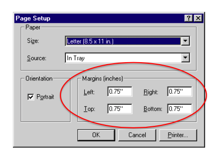
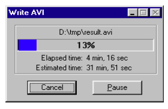
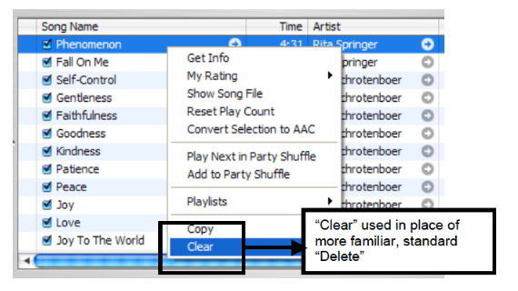

Lurt å generalisere en god regel. Relevant for
Designprinsipper fungerer som sjekklister i designprosessen. Reduserer
Ressurser brukt i utvikling
Antall designiterasjoner
ACCFMV
Hvilken handling en gjenstand signaliserer. Ting som inviterer til handlinger. Dørhåndtaket sier trykk meg ned. Datamusen klikk på meg! Gjøre det åpenbart for brukeren hvordan et produkt kan brukes.
Relasjon mellom objekt og aktørs fysiske egenskaper
Real affordance:
Perceived affordance
False affordance (feller)
Like elementer bør ha lik funksjon.
Oppførsel bør være konsistent mht en bestemt oppgave: Vi velger et objekt ved å klippe på venstre musetast. Inkonsistens fører til at brukeren må huske unntak.
Affordance betinges av ulike typer constraints:
Det fysiske
Det kulturelle
Det logiske
Trinnbaserte oppsett er affordance og constraints satt sammen.
Feedback fullfører affordance. Der affordance gir info om handlinger som kan gjøres, gir feedback info om at handlingen er gjort.
Det er 3 typer feedback:
Sammenhengen mellom kontrollelementer (layout og interaksjon) og deres effekt.
Volumkontroll med knapper over hverandre: Den øvre øker volumet, den nedre senker.
Dårlig mapping:

Kan jeg se det?
Hvis funksjonaliteten er synlig, forstår brukere hva de kan gjøre. Knapper som er gjemt bak en meny er vanskelig å vite at man kan klikke på – hvis de ikke er synlige engang!
Størrelse
Toleranse (for feil)
Uanstrengende
Fleksibel
Forståelig
Enkel
Lik for alle
Visibility
Match mellom system og virkelige verden
Brukerkontroll
Consistency (standarder)
Feilhåndtering
Gjenkjennelse heller enn gjenerindring
Fleksibilitet
Minimalisme
Hjelpe brukeren gjennom feil
Dokumentasjon
The system should always keep users informed about what is going on, through appropriate feedback within reasonable time.

The system should speak the users' language, with words, phrases and concepts familiar to the user, rather than system-oriented terms. Follow real-world conventions, making information appear in a natural and logical order.
Users often choose system functions by mistake and will need a clearly marked "emergency exit" to leave the unwanted state without having to go through an extended dialogue. Support undo and redo.
Users should not have to wonder whether different words, situations, or actions mean the same thing. Follow platform conventions.

Even better than good error messages is a careful design which prevents a problem from occurring in the first place. Either eliminate error-prone conditions or check for them and present users with a confirmation option before they commit to the action.
Minimize the user's memory load by making objects, actions, and options visible. The user should not have to remember information from one part of the dialogue to another. Instructions for use of the system should be visible or easily retrievable whenever appropriate.
Accelerators — unseen by the novice user — may often speed up the interaction for the expert user such that the system can cater to both inexperienced and experienced users. Allow users to tailor frequent actions.
Dialogues should not contain information which is irrelevant or rarely needed. Every extra unit of information in a dialogue competes with the relevant units of information and diminishes their relative visibility.
Error messages should be expressed in plain language (no codes), precisely indicate the problem, and constructively suggest a solution.
Even though it is better if the system can be used without documentation, it may be necessary to provide help and documentation. Any such information should be easy to search, focused on the user's task, list concrete steps to be carried out, and not be too large.